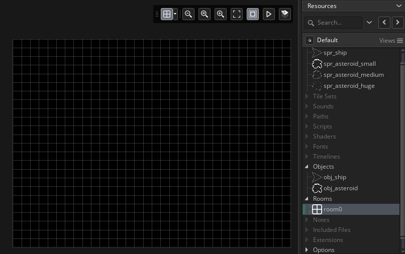
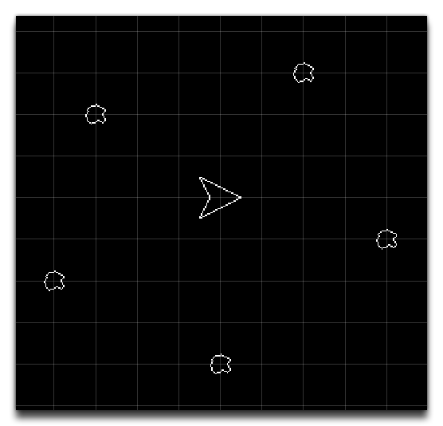
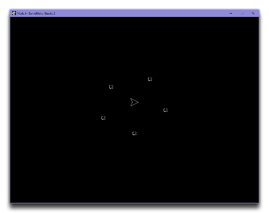
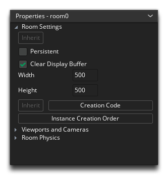

All projects in GameMaker Studio 2 start with a room already in the resource tree called "Room_0". This means we don't need to create one for now, but you should rename this room to "rm_game" so it has a less generic name (this is done by performing a slow double-click  on the name in the resource tree and then typing the new name). Now, what happens if we add instances of our objects to the room and test it?
on the name in the resource tree and then typing the new name). Now, what happens if we add instances of our objects to the room and test it?
Let's find out! Open the Room Editor by double clicking  on the room in the resource tree. When the Room Editor opens, you'll see a lot of new tabs appear in the IDE. We're not going to worry too much about them right now, so just click and drag an instance of the object "obj_ship" into the room:
on the room in the resource tree. When the Room Editor opens, you'll see a lot of new tabs appear in the IDE. We're not going to worry too much about them right now, so just click and drag an instance of the object "obj_ship" into the room:

Now drag in a few instances of the object "obj_Asteroid", so that it looks like this:

If you click the Play quick button  now, the game will compile and you should see a window open with the instances we've placed in the room visible:
now, the game will compile and you should see a window open with the instances we've placed in the room visible:

Okay, that's not very interactive, but it's a start! Seeing the game like this though does show up a minor problem... the game window is too big. We want the game to have a retro feel, so that means a smaller resolution and play area. Close the game window and go back to the room editor now.
We are going to edit the size of the room, so go to the Room Properties and change the Width and height to 500px each:

This will change the room size, but may leave some instances outside of the room. You can simply click  on them then drag them back into the playable room area.
on them then drag them back into the playable room area.
If you test play the game again, you can see that the game window is a much more appropriate size.
We can now go back to our game objects and start to add some logic into them so they actually do something...
Click "Next" to continue...